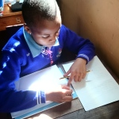
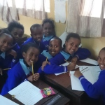

Play is a range of intrinsically motivated activities done for recreational pleasure and enjoyment. Play is commonly associated with children and juvenile-level activities, but play occurs at any life stage, and among other higher-functioning animals as well, most notably mammalls
.In our school teachers are very kind. they lead to the right way and teach us many subjectse.g,math kiswahili english science S.S.t and C.R.E. we love the way they teach us. they are 20 female teachersand 19male teachers.our school is always the best in academic activities and sport.Rarely we play with the other the other school it is always the best speaking schools. it always the best school .It always the best school in the community it always nice to the other school.
Play is a range of intrinsically motivated activities done for recreational pleasure and enjoyment.Our schoolgoes for P.E on the lesson they have.on mondays we have games in the evening.on wedsday we also have games f0r an hour.on satureday we also have gmaes for two hours.We always have sport day on february, it is ussally so fan.Most of the pupils nin our schools obey the rule they are ussualy play with other classes alot of time.Sometime
our cooks and theachers feed all of us very well.WE always drink porrige every morning with sugar.lunch time we always eat rice and beans which i always eats it for two hour.we always have plenty to eats.Most of the teachers always stay in school 80% at their homes.the teachers are very nice.they are the best they
